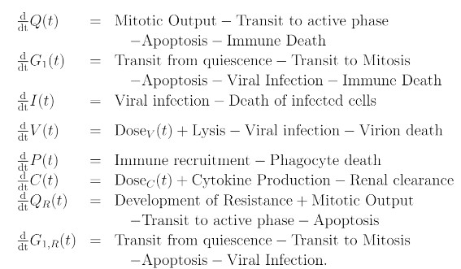
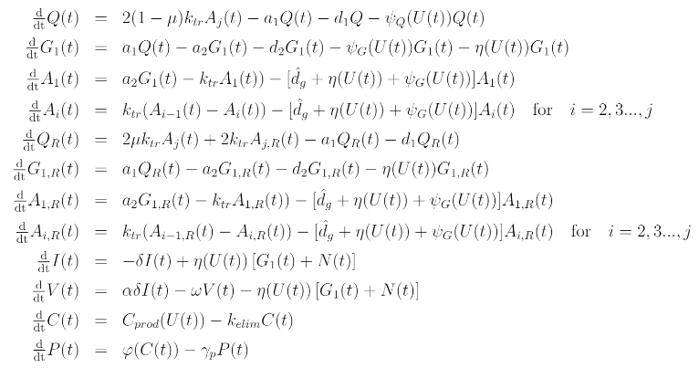

Modélisation
L'implémentation du modèle d'essais cliniques se poursuit. On présente le système d'équations différentielles qui modélise la croissance tumorale. Il est composé des quantités suivantes:

Après réduction, le modèle prend la forme

L'implémentation initiale du modèle de croissance tumorale est complété. L'objectif pour les jours à venir est de lancer une première simulation et de tenter de reproduire un résultat connu afin de vérifier l'intégrité du code. Une description plus détaillée du modèle est offerte ici.